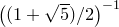

The widths of plots may be set by means of two commands – set size and set width. Both are equivalent, and should be followed by the desired width measured in centimetres, for example:
set width 20
The set size command can also be used to set the aspect ratio of plots by following it with the keyword ratio. The number which follows should be the desired ratio of height to width. The following, for example, would produce plots three times as high as they are wide:
set size ratio 3.0
The command set size noratio returns to PyXPlot’s default aspect ratio of the golden ratio, i.e. . The special command set size square sets the aspect ratio to unity.